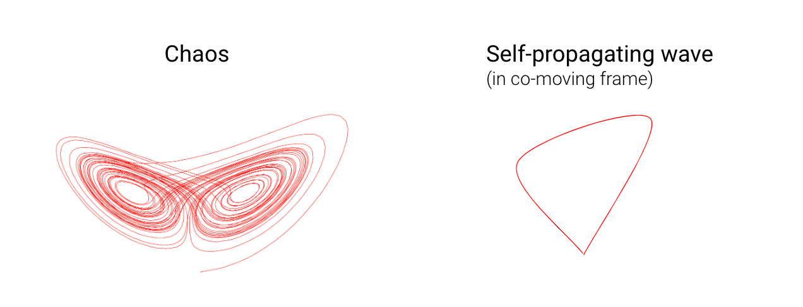
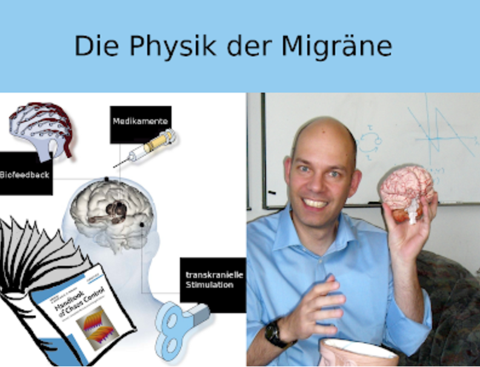

Wer bei Physik und Migräne an Kopfschmerzen denkt — verursacht durch das Nachdenken über schwere Körper auf schiefen Ebenen, Spulen in Schwingkreisen oder Gravitation als gekrümmte Raumzeit — der liegt falsch. Physik mag Kopfschmerzen verursachen, Migräne aber nicht. Migräne ist eine Volkskrankheit; der Kopfschmerz dabei nur eines von vielen möglichen Symptomen.
Das Tätigkeitsfeld der Physiker hat sich sehr erweitert. Viele arbeiten heute interdisziplinär außerhalb der typischen Forschungsfelder der Physik. Ein solches neues Arbeitsfeld — kurz „Die Physik der Migräne" — entsteht an der Technischen Universität Berlin. Der eigentliche Titel meiner Forschergruppe, Nichtlineare Dynamik in Physiologie und Medizin, deutet schon an, dass es nicht nur um Migräne geht.
Doch forschen wir zurzeit hauptsächlich an den Ursachen einer Migräne-Attacke. Dazu nutzen wir Konzepte der Synergetik — der Lehre vom Zusammenwirken und der Selbstorganisation komplexer Systeme. Im Rahmen des vom BMBF geförderten Bernstein Center wird diese Neurophysik zusätzlich mit einer Nachwuchsgruppe und einem Projekt über Schlaganfall, Migräne und Epilepsie gefördert.

Das Gehirn von außen steuern
In den neuen Projekten der TU Berlin stehen Fragen im Vordergrund, wie sich krankhafte Prozesse im Gehirn gezielt von außen steuern lassen. Neue Kontrollmethoden sollen dazu untersucht und weiterentwickelt werden. Die Chaos-Kontrolle ist ein Beispiel aus dem Gebiet der Synergetik: Sie wird seit vielen Jahren in der Arbeitsgruppe von Prof. Dr. Eckehard Schöll erforscht. Nun sollen klinische Anwendungen in Angriff genommen werden.

So entsteht an der TU Berlin ein Ort, der von der theoretischen Physik eine Brücke zur neurologischen Forschung schlagen soll. Gemeinsam mit Klinikern der Charité Berlin möchten wir ein international sichtbares Zeichen interdisziplinärer Zusammenarbeit setzen.
Nachtrag
Den Titel meiner Forschergruppe — Nichtlineare Dynamik in Physiologie und Medizin — habe ich nachgetragen. Die Gruppe existiert als unabhängige Forschergruppe erst seit Mitte 2010.
Verwandte Beiträge
- Was ist Altamirage? — Physik als ungewöhnliches Werkzeug gegen Migräne.
- Schöll, E. & Schuster, H. G. (Hrsg.) (2008). Handbook of Chaos Control. Wiley-VCH.